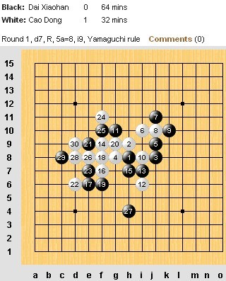
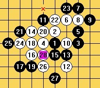
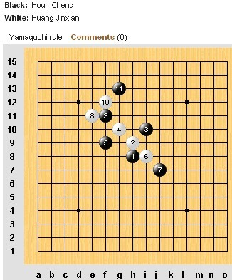

世锦赛AT第一轮曹冬速胜戴晓涵
首页
五子棋新闻
#1 世锦赛AT第一轮曹冬速胜戴晓涵 作者：蓝天蓝 发表时间：2011-8-4 17:31:07
世锦赛AT第一轮曹冬速胜戴晓涵
作者：通讯员
原文网址链接:http://www.rifchina.com/Article/ShowArticle.asp?ArticleID=6455
曹冬开金星，真够胆大的，在QT中戴晓涵就是金星输的冈部宽，戴交换，结果这盘戴13走对了，但是面对曹冬一反常态的快攻，戴第27手没有走出唯一防，导致脆败。

正确走法大致如下（李一）

黄金贤对中华台北侯宜呈还在进行中

#2 Re:世锦赛AT第一轮曹冬速胜戴晓涵 作者：小小亦默 发表时间：2011-8-4 17:35:38
 啥叫速败 明显小天犯了个低级错误 要不这棋曹东能胜啊 绝对黑杀的棋啊
啥叫速败 明显小天犯了个低级错误 要不这棋曹东能胜啊 绝对黑杀的棋啊
#3 Re:世锦赛AT第一轮曹冬速胜戴晓涵 作者：忧郁的双眼 发表时间：2011-8-4 17:42:43
自己找死也算速败！！！
#4 Re:世锦赛AT第一轮曹冬速胜戴晓涵 作者：梧桐风 发表时间：2011-8-4 17:43:19
我在想要是小天这盘赢了，他们会用什么标题，惜败么？
#5 Re:世锦赛AT第一轮曹冬速胜戴晓涵 作者：小小亦默 发表时间：2011-8-4 17:44:36
挺可惜的
#6 Re:世锦赛AT第一轮曹冬速胜戴晓涵 作者：aabb 发表时间：2011-8-4 17:54:31
感觉还是曹冬的走法比较好。
#7 Re:世锦赛AT第一轮曹冬速胜戴晓涵 作者：珍惜你和我 发表时间：2011-8-4 18:02:06
日本名人要挂了
#8 Re:世锦赛AT第一轮曹冬速胜戴晓涵 作者：珍惜你和我 发表时间：2011-8-4 18:06:18
混混可以搞死对手了
#9 Re:世锦赛AT第一轮曹冬速胜戴晓涵 作者：我是裁判 发表时间：2011-8-4 19:20:53
速胜分两种，时间短或手数短。从本局来讲，手数可以算速胜。如果不是两人的默契，那么但就本局来讲曹的表现优于戴。但本人还是更关心他们与其他国家棋手的对局结果。
#10 Re:世锦赛AT第一轮曹冬速胜戴晓涵 作者：屏蔽 发表时间：2011-8-4 19:27:43
“正确走法大致如下”这八个字真不是我说的……
#11 Re:世锦赛AT第一轮曹冬速胜戴晓涵 作者：我是裁判 发表时间：2011-8-4 19:30:39
就是你说的，你刚说的
#12 Re:世锦赛AT第一轮曹冬速胜戴晓涵 作者：山东歪歪 发表时间：2011-8-4 19:54:36
曹冬V5,戴晓涵加油！
#13 Re:世锦赛AT第一轮曹冬速胜戴晓涵 作者：鬼冢弹间 发表时间：2011-8-4 20:09:37
这棋即使防住之后也是平衡 ，根本没有什么黑大优 曹冬下得很好
#14 Re:Re:世锦赛AT第一轮曹冬速胜戴晓涵 作者：猪小姐 发表时间：2011-8-4 20:17:35
引用：
原文由 鬼冢弹间 发表于 2011-8-4 20:09:37 :
这棋即使防住之后也是平衡 ，根本没有什么黑大优 曹冬下得很好
 楼上的头像为嘛跟我一样。。。。。。
楼上的头像为嘛跟我一样。。。。。。
#15 Re:世锦赛AT第一轮曹冬速胜戴晓涵 作者：鬼冢弹间 发表时间：2011-8-4 20:23:34
 缘分吧
缘分吧
#16 Re:Re:世锦赛AT第一轮曹冬速胜戴晓涵 作者：猪小姐 发表时间：2011-8-4 20:26:21
引用：
原文由 鬼冢弹间 发表于 2011-8-4 20:23:34 :
缘分吧
这照片是我老公拍的。。。。。。
#17 Re:世锦赛AT第一轮曹冬速胜戴晓涵 作者：鬼冢弹间 发表时间：2011-8-4 20:32:19
 其实是我试试看换头像 然后就复制你的头像了。。
其实是我试试看换头像 然后就复制你的头像了。。
#18 Re:Re:世锦赛AT第一轮曹冬速胜戴晓涵 作者：猪小姐 发表时间：2011-8-4 20:38:39
引用：
原文由 鬼冢弹间 发表于 2011-8-4 20:32:19 :
其实是我试试看换头像 然后就复制你的头像了。。
 好叭让俺们哒头像和平共处~~~~~~~~~~~~~
好叭让俺们哒头像和平共处~~~~~~~~~~~~~